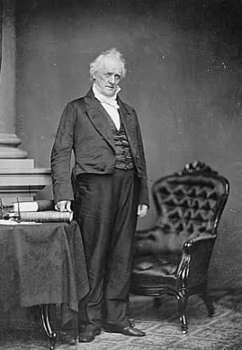
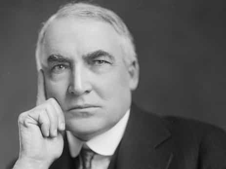
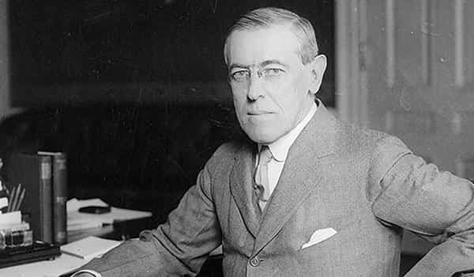
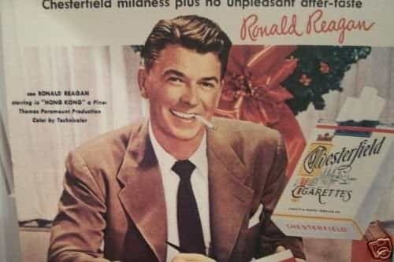
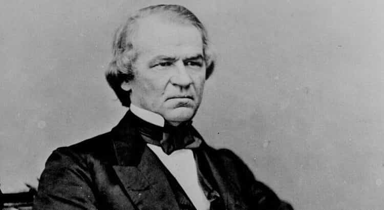
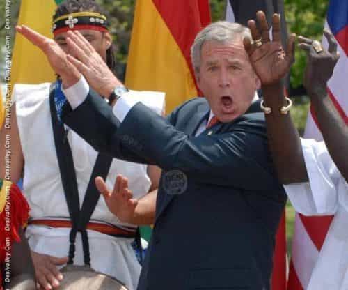
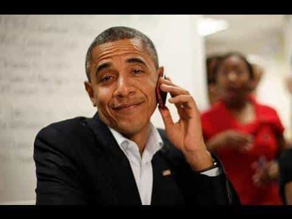
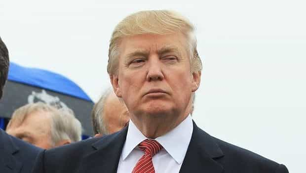

Jared is a middle-aged guy full of old-man wisdom. He's best described as a gentlemen scholar and a man among men. You can read his writing at his site: Legends of Men


Why are the worst presidents in U.S. history considered to be so? Many of the same presidents are considered to be among the worst by scholars and historians. When you go in-depth as to why they are considered the worst, you will notice some trends. I’ve distilled them down to five factors that make or break U.S. presidents.
Presidents who wait to solve problems or wait to take action in dire situations create more problems and more dire situations. Their indecision represents personal and presidential failures that make earn them a place among the worst presidents.
Presidents who spend American resources on imperialism when they should be solving domestic problems are among the worst. There are no international issues that take precedence over domestic issues. We have everything we need in America. Imperialism at this point is a sort of vanity, especially if it comes at the expense of solving America’s domestic problems.
An old teacher I once had used to say that the problem with the American government was that all the corruption was legal. Yet, some presidents are far more corrupt than others. Those presidents are among the worst.
The military is expensive. The military industrial machine America has is incredibly expensive. Not only does it cost a great deal of money to keep a well-trained standing army, but once you have such an army there is a temptation to use it. Those who make that call are among the worst presidents.
As Ann Coulter says, America has always been a two-race nation. There are the Europeans who settled this nation and descendants of slaves from Africa who labored in the fields. There were some other early peoples (like Native Americans who allied with European settlers and Chinese laborers who worked the railroads), but these two made the vast majority. Many of the worst presidents antagonized the relations between these groups.
With that said here are some of the worst presidents in U.S. history.

Buchanan is often considered one of the worst because he did very little to prevent the southern states from seceding in the lead-up to the civil war. He influenced a supreme court case which decided that slavery could be outlawed hoping it would put the issue to rest. It did not. The slavery/anti-slavery argument continued and lead to the civil war. Buchanan failed to take decisive action and is remembered for that failure.

Harding admitted to not being fit for the office, but he took it anyway. He was a notorious people pleaser and womanizer. What makes him one of the worst is the corruption. He let his cronies and buddies use public resources and funds for personal gain. What’s more, he was notorious for spending his time playing golf and poker when he should’ve been doing president stuff.

Wilson is guilty of warmongering and imperialism. He had an out-of-control sense of humanitarianism. He wanted to spread democracy across the globe for the betterment of man. He did that by getting the U.S. involved in WWI. It created an economic recession. Domestic economic problems and the loss of American lives were the prices of Wilson’s attempt at imperialism.

Many people like Reagan for his good qualities, but there is no denying how much bad stuff started with Reagan. He shifted the tax burden from the very wealthy to the working class. This resulted in the ever-increasing rich-poor wage gap which may make the U.S. a 3rd world country one day. He placed all woes on the government and taxes but didn’t mind spending incredible amounts of money on the military and other acronym organizations.

Johnson is often considered among the worst because of his inability (corruption?) in regards to the reconstruction of the U.S. south after the civil war. His actions and inactions resulted in Jim Crow laws and disillusionment of southern states with the federal government. He was so bad he was impeached and nearly kicked out of office.
Now that we have some historical examples (there were more that I didn’t mention), how do 21st century Presidents compare?

No other president mixed up warmongering, imperialism, and corruption as blatantly as George W. Bush. After 9/11, which he and Bill Clinton should’ve done more to prevent, Bush got the U.S. into two wars. Rather than just bombing those waste-dumps known as Iraq and Afghanistan into oblivion, he sent in ground troops. We were in Iraq for years after Saddam Hussein was dead.
Halliburton was all anyone could talk about during those years. Did Bush really send U.S. military to die in Iraq so Halliburton could acquire its oil reserves? Or was it also to spread democracy, this siren song of the neo-cons? Who can say? Either way, a century from now Gearoge W. Bush will certainly be remembered among the worst U.S. presidents for these reasons.

Logic would tell us that the first black president would have strained racial tensions on his CV but he does. Every time somebody got on some podium and said America is a racist nation, Obama should have replied that it wasn’t. Yet he never did. His inaction really sent America down the wrong direction. (I’m slightly surprised he didn’t say that the only reason he won the presidency was that the white half of him had white privilege).
Corruption scandals abound during his office thanks in large part to his secretary of state, HRC. It was a poor choice, but you also have to wonder why she was never relieved of her duties. He’s got warmongering on his resume as well. The war in Afghanistan started before he was in office and continued throughout his presidency. At some point ending a war has to be a priority or you’ll be remembered as one of the worst, especially with all the corruption and racial tensions.

Trump only has two years while the others have eight, so this is probably premature. So far, though, all the corruption charges against have been complete BS. He’s accomplished much economically and worked to kill terrorists rather than just prolong the wars against them. His worst flaw thus far is the lack of a southern border wall. It could still happen though.
Thus far, the first two 21st century presidents will undoubtedly go down in history as two of the worst U.S. presidents ever. I have high hopes that Trump will be remembered as one of the best.
For more about manhood and masculinity in literature, history, and the media check out Legends of Men.
Read More:Mainstream Media Applauds Actor And Globalist Mouthpiece Jesse Williams For Racist Tirade